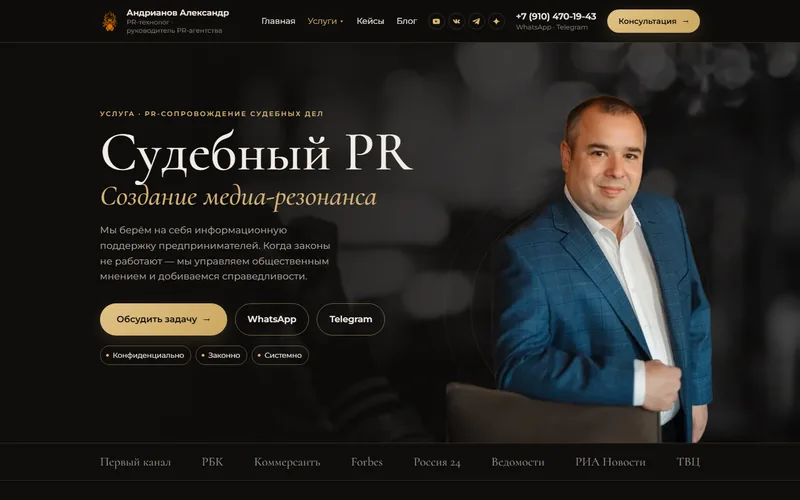
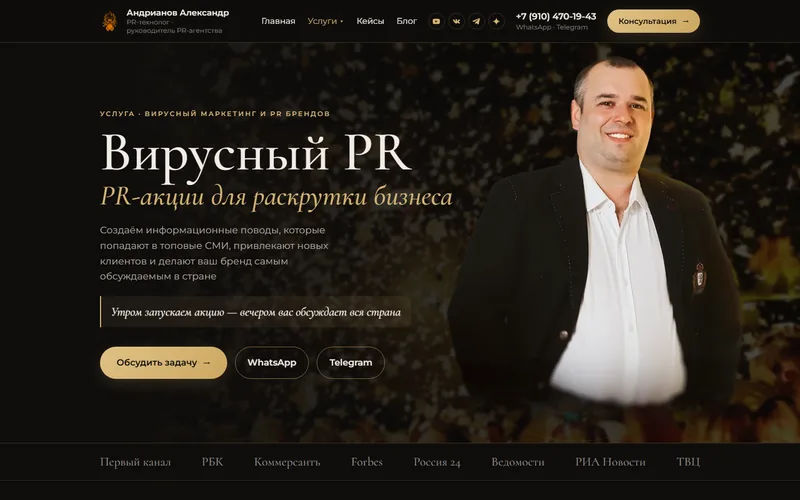

Сайт и продвижение · 2026
Сайт агентства и нейропоиск
Новый сайт агентства на WordPress, собранный с использованием макета в Figma, с роликами прямо на страницах. Затем продвижение: чтобы нейросети называли агентство в ответах.
0,8 МБвесит главная при загрузке

Сайт PR-технолога Александра Андрианова: главная и три страницы услуг — классический, судебный и вирусный PR — собраны на WordPress с использованием макета в Figma. Ролики агентства в разделе «Креативы» играют прямо на сайте.
Задача
Новый дизайн был готов в Figma: главная и страницы трёх направлений агентства. Нужно было собрать по нему живой сайт на WordPress — так, чтобы он точно повторял макет и на компьютере, и на телефоне.
Агентство продаёт результат, поэтому сайт сразу показывает работу: публикации в СМИ, выступления и рекламные ролики, которые смотрят прямо на странице.
Цифры
- 4
- страницы с использованием макета в Figma: главная и три направления
- 7
- роликов в разделе «Креативы» играют с сайта
- 0,8 МБ
- весит главная при загрузке
- 0
- сдвигов вёрстки при загрузке (CLS)
Как устроено
- 01
Страницы собраны своим шаблоном WordPress по слоям макета: тексты, картинки и мобильная раскладка — как в макете.
- 02
Шрифты отдаются с самого сайта, на страницах грузится только нужное.
- 03
Ролики «Креативов» играют прямо с сайта — без чужого плеера и его рекламы; канал агентства на RUTUBE тоже оформлен.
- 04
Перед запуском клиент принял каждую страницу на закрытых черновиках, выкладка сверяется по контрольным суммам файлов на сервере.


Глава 2 · продвижение
Продвижение в нейропоиске
После запуска агентство заказало продвижение в ответах нейросетей. Когда человек спрашивает Алису, GigaChat или DeepSeek про судебный PR, агентство должно попадать в ответ как источник.
Сначала я замерил, что нейросети отвечают сейчас, затем привёл сайт к виду, который они читают и цитируют: единое описание агентства, разметка, статьи-ответы, чистые заголовки и описания.
Продвижение в цифрах
- 30 × 3
- вопросов по теме агентства к Алисе, GigaChat и DeepSeek в исходном замере
- 70
- страниц сайта прошли аудит
- 14 / 14
- проверок разметки для поисковиков и нейросетей
- 24
- адреса отправлены Яндексу на переобход
Что сделано
- 01
Исходный замер
30 вопросов к трём нейросетям. Вопросы закреплены, чтобы повторный замер шёл по тем же словам.
- 02
Аудит сайта
70 страниц: повторы в описаниях, заголовки, индексация, переадресации.
- 03
Паспорт сущности и llms.txt
Одно выверенное описание агентства и его руководителя для всех площадок и файл llms.txt для нейросетей.
- 04
Разметка
Organization, Person, Service, Book, Article и FAQPage: нейросеть видит, кто это, что он делает и где об этом написано.
- 05
Две статьи-гайда
Подробные ответы на вопросы, которые люди задают нейросетям по теме агентства.
- 06
Заголовки и переобход
Заголовки и описания Yoast в 20 местах, переадресации и переобход 24 адресов.
Нужно похожее?